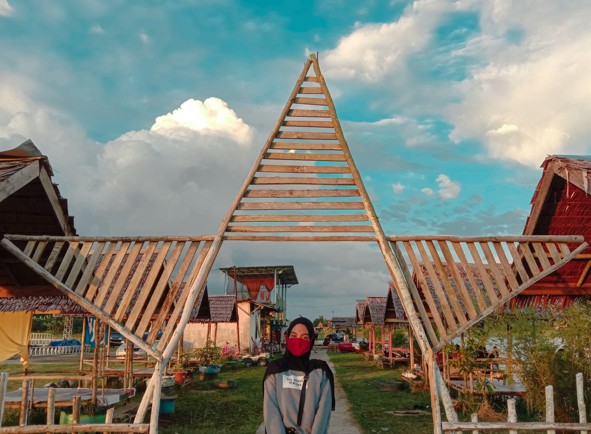

Wisata HO'CE

|
klik gambar untuk mengubah
Ho'ce atau Hobby Center merupakan tempat yang awalnya hanya untuk hobi seperti namanya hobby center yang menjadikan pusat hobi seperti RC boat dan motor trail.
Sekarang Ho’ce yang ada di Kuala Dua Kubu Raya menjadi tempat rekreasi untuk warga sekitar maupun warga Pontianak, ini dikarenakan tempat ini tidak terlalu jauh dari pusat kota Pontianak.
Danau Ho’ce yaitu danau buatan yang dibentangan sawah yang sangat luas serta di kelilingi jalur balapan motor trail dan banyak wahana permainan air di dalamnya.
Beberapa permainan air yang ada di danau ho’ce ini diantaranya ada Kano dan Sepeda air. Untuk Kanon dikenakan harga Rp.10.000/30 menit, Sepeda air Rp.15.000/30 menit.
Di Danau Ho'ce ini juga terdapat kafe yang menjual beberapa minuman dan makanan, untuk makanan seperti Nasi goreng, Ayam Geprek, Mie Tiaw, Indomie Rebus, Indomie Goreng, Goreng Pisang, Kentang Goreng dan banyak lainnya.